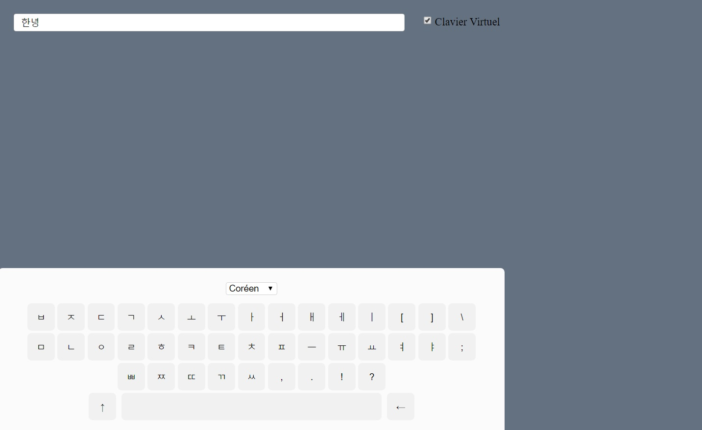
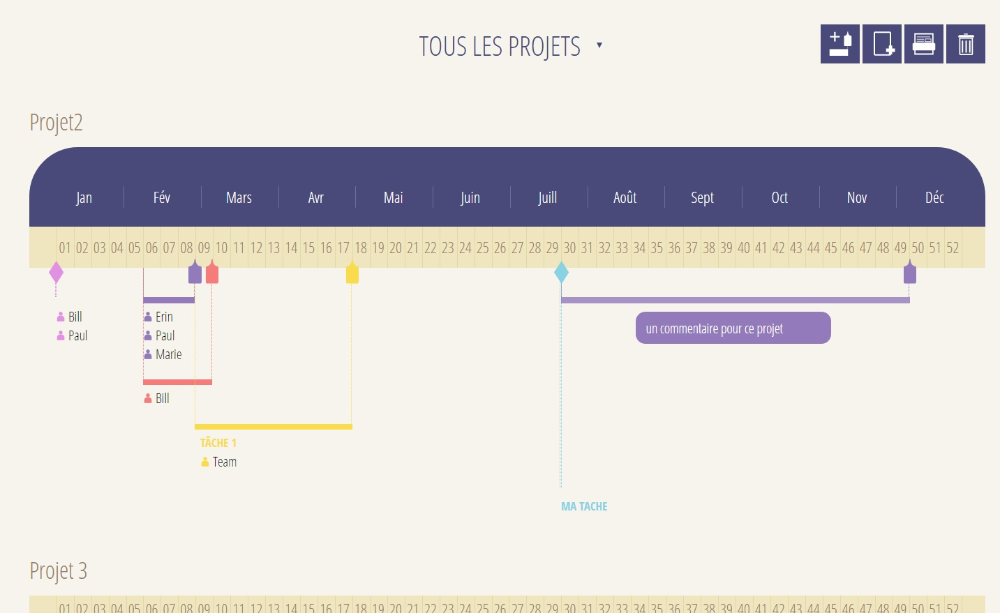

Refonte des pages "panier" et "produit" d'un site de vente de bijoux en ligne
- Utilisation du CMS e-commerce Shopify, de ses macros et de ses objets
- Intégration, en responsive, suivant maquettes pour la refonte de pages
- Technos utilisées : Html, CSS3, javascript, jQuery
Merci-majolie (2015)

Création d'un site d'aide à l'apprentissage des langues
- Gestion des utilisateurs grâce au sessionStorage et aux cookies
- Manipulation du DOM avec jQuery
- Gestion de base de donnée avec PHP et MySQL
- Requêtes AJAX vers PHP évitant le rechargement de page
- Programmation orientée objet
- Responsive web design à l'aide de Bootstrap
- Technos utilisées : Html, CSS3, bootstrap, jQuery, PHP, MySQL, LESS
Mémots (2016) - Projet personnel

Création d'un clavier virtuel coréen
- Récupération des signes coréen et de leurs données dans un fichier JSON afin de calculer la construction des syllabes
- Possibilité de choisir la langue de clavier entre français et coréen grâce à ce même fichier JSON
- Technos utilisées : Html, CSS3, AngularJS
Clavier coréen (2016) - Projet personnel

Création d'un outil de gestion de projet utilisable en local
- Création d'un serveur nodeJS et stockage des données dans un fichier JSON
- Technos utilisées : Html, CSS3, nodeJS, javascript natif
Outil PMO (en cours) - Projet personnel